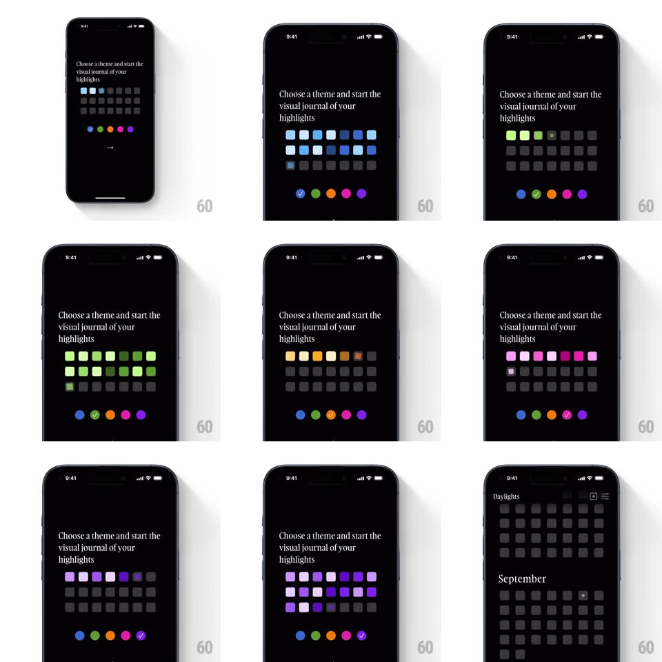

Media
Frame-by-frame

Rebuild this interaction 1:1: Daylights' theme picker - "Choose a theme and start the visual journal of your highlights" over a grid of swatch squares; tapping a theme dot ripples a staggered color transition across the grid into that theme's palette.

Rebuild this interaction 1:1: Daylights' theme picker - "Choose a theme and start the visual journal of your highlights" over a grid of swatch squares; tapping a theme dot ripples a staggered color transition across the grid into that theme's palette. ## Integration Integration: stack-agnostic spec - springs given as stiffness/damping, timed motions as duration + curve; map every value to your framework and animation library of choice. ## Scene Black screen: serif two-line prompt top-left, a 7x4 grid of rounded squares (initially dark gray placeholders), a row of five theme dots (blue, green, orange, magenta, purple) with a checkmark on the selected one, and a small arrow button below. ## Motion spec Pattern: staggered grid color ripple. - Tap a theme dot: the checkmark slides to it (spring ~400/24) and the grid re-colors in a diagonal stagger - each square flips from gray to its theme shade starting top-left, ~25ms apart, cascading down-right like a wave. - Each square's flip: scale 1 -> 0.85 -> 1 (spring ~380/20) while crossfading gray -> its shade; shades vary per square (a gradient of tints within the theme). - The arrow button takes the theme's lead color (200ms tint). - Continuing into the app, the September calendar grid inherits the theme - the same staggered reveal plays once on entry. ## Calibration - The stagger direction is constant (top-left origin) regardless of which dot is tapped. - Every theme keeps some squares near-black - the palettes are tints on dark, never light screens. ## Reduced motion Grid crossfades to the new palette at once, no stagger or scale. ## Don't miss - The squares' varied tints make the grid read as a mini calendar/journal, not a flat color block. - The checkmark dot swap is instant - only the grid ripples.